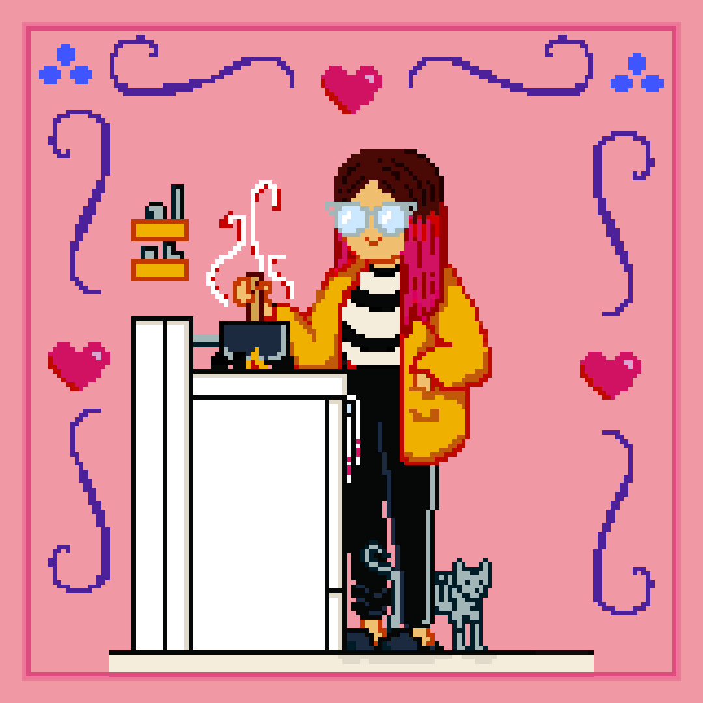

A Little About Me
I am 30 years old, I'm a ♎, I have a cute cat named Miso and a long time boyfriend named Mike. We started an annual tradition called Jackie Chanuary, where we watch Jackie Chan movies all throughout January. We also do Terror Tuesdays, where we watch b-horror movies, so far Tammy and the T-Rex has been one of the best.
When I was younger I really wanted to be a paleontologist, I had my room decked out in dinosaur stuff for a few years. After that, I got really obsessed with mythology and had a bunch of mythology encyclopedias. I tried to read Homer's Odyssey when I was 8 but it was way too much for me, so I read the Wishbone version instead.
I've spent the last 2 years learning JavaScript, Dart, Python, Java and PHP. I've also been learning screenprinting, miniature model making and stop motion puppetry. I recently started learning how to do pixel art, so all the art on this page I made myself!